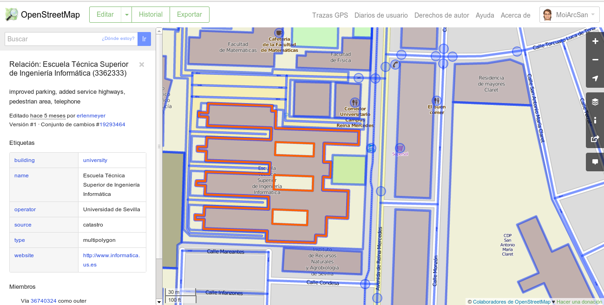
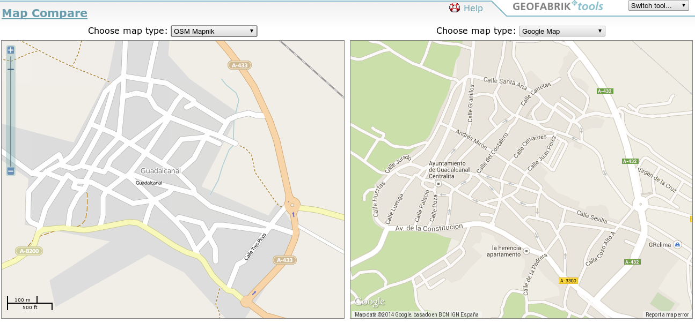

OpenStreetMap
Investigación y Desarrollo
Geoinquietos Sevilla
Qué es OSM
Wikipedia de los mapas
Proyecto para crear un mapa colaborativo mundial
- Gran Base de Datos
- Información geográfica - Mapa
- Ecosistema de productos y servicios
Qué es OSM

Ver
Qué es OSM
Consultar
Qué es OSM

Editar
Qué es OSM
Sentido
- Crear + Compartir información
- Cualquiera puede contribuir
- Formato digital --> en la nube
- Información
- Accesible por todo el mundo
- Totalmente gratis
- De uso libre
Qué es OSM
Requisitos de uso
- Atribución
- Respetar licencia abierta
Comparemos

Sevilla
Comparemos
Guadalcanal
Flujo de trabajo
Distribución
- Recolección de datos
- Volcado de datos
- Uso de los datos volcados
Flujo de trabajo
Recolección de los datos
- Mapas de apoyo o de referencia
- GPS + cámara de fotos
Flujo de trabajo

Walking paper
Mapping Party

Baeza
Flujo de trabajo
Volcado de datos
- JOSM
- Versión de escritorio (Java)
- Hay que tener conocimientos
- Admite plugins
- Mucha funcionalidad
- Hay más ...
Flujo de trabajo

JOSM
Experiencia SEVICI
Datos de JCDecaux
Experiencia SEVICI
Etiquetamos los elementos
Experiencia SEVICI
Comprobamos y rectificamos
Experiencia SEVICI
Volcamos a OSM
Experiencia SEVICI
Resultados
Experiencia SEVICI
Diferencia con JCDecaux de un 20%
Agradecimientos
Gracias por vuestra atención
Licencia

CC-BY-SA